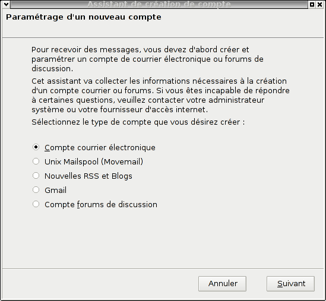

Configuration du client email Thunderbird.Information de base de notre compte d'exemple :
Adresse email : "mon.adresse@mondomaine.com" Configuration de thunderbird : Pour télécharger Mozilla-Thunderbird, allez sur http://www.mozilla-europe.org/fr/products/thunderbird/ Exécutez Thunderbird. Selectionnez si besoin "Ne rien importer", puis appuyez sur "Suivant". Une nouvelle fenêtre apparaît :  Sélectionnez "Compte courrier électronique", puis appuyez sur "Suivant". Une nouvelle fenêtre apparaît :
"Votre nom :" correspond à la valeure de "Nom" pour l'adresse d'expéditeur "Nom <adresse@email>", son contenu n'a pas d'importance mais Thunderbird a besoin d'une configuration pour pouvoir continuer. Pour passer à l'étape suivante, cliquez sur "Suivant". Une nouvelle fenêtre apparaît : Sélectionnez "IMAP". Serveur de réception : "Nom du serveur :" mettre "imap.mondomaine.com". Serveur d'envoi : "Nom du serveur :" mettre "smtp.mondomaine.com". Pour passer à l'étape suivante il faut cliquer sur le bouton "Suivant" situé en bas à droite. Une nouvelle fenêtre apparaît :
"Nom d'utilisateur entrant :" mettre "mon.adresse@mondomaine.com". "Nom d'utilisateur sortant :" mettre "mon.adresse@mondomaine.com". Pour passer à l'étape suivante il faut cliquer sur le bouton "Suivant" situé en bas à droite. Une nouvelle fenêtre apparaît :
"Nom du compte :" mettre "mon.adresse@mondomaine.com". Pour passer à l'étape suivante il faut cliquer sur le bouton "Suivant" situé en bas à droite. Une nouvelle fenêtre apparaît :
Il s'agit du récapitulatif de la configuration de l'adresse email. Il faut maintenant affiner cette configuration afin de pouvoir la sécuriser. Pour passer à l'étape suivante il faut cliquer sur le bouton "Terminer" situé en bas à droite. Une nouvelle fenêtre apparaît :
Définissez la valeure du mot de passe pour se connecter au serveurde réception : "a1b2c". Cliquez sur le bouton "OK". Une nouvelle fenêtre apparaît : Cliquez sur "OK". Fenêtre principale de Thunderbird :
Cliquez sur "Édition" puis "Paramètres des comptes...", ou si vous utilisez windows : Outils puis Paramètres des comptes...". Une nouvelle fenêtre apparaît : Allez dans "Serveur Sortant (SMTP)", puis selectionnez "mon.adresse@mondomaine.com - smtp.mondomaine.com" et appuyez sur le bouton "Modifier". Une nouvelle fenêtre apparaît :
Selectionnez soit "TLS", soit "SSL", puis validez en appuyant sur le bouton "OK". Allez dans "Paramètres serveur" Dans la partie "Paramètres de sécurité", sélectionnez soit "TLS", soit "SSL". Cliquez sur "OK". Thunderbird est fin prêt et les connexions seront cryptées. |